〔作者〕苏秋1972 〔版本〕2026年7月第二版
作为一个经典的 Minecraft 铁路模组，沉浸铁路（Immersive Railroading，简称 IR）向 MC 世界添加了一个新的铁路系统，旨在用基于现实的物理和真实比例的火车展现真正宏伟的铁路。本教程将基于 Minecraft 1.20.1、沉浸铁路最新的 1.11.0 正式版，对铁路轨道建设、机车驾驶、列车连接、游戏配置等作一个比较系统、全面的基础介绍。
欢迎各位读者对本教程进行斧正和补充。
铁路网是整个 IR 模组的根基所在，所以我们的教程也从这里开始。不过我们这里只讨论建设铁路轨道的基本方法，至于怎样建设美观的路基、隧道、桥梁等，就交由读者自行探索了。
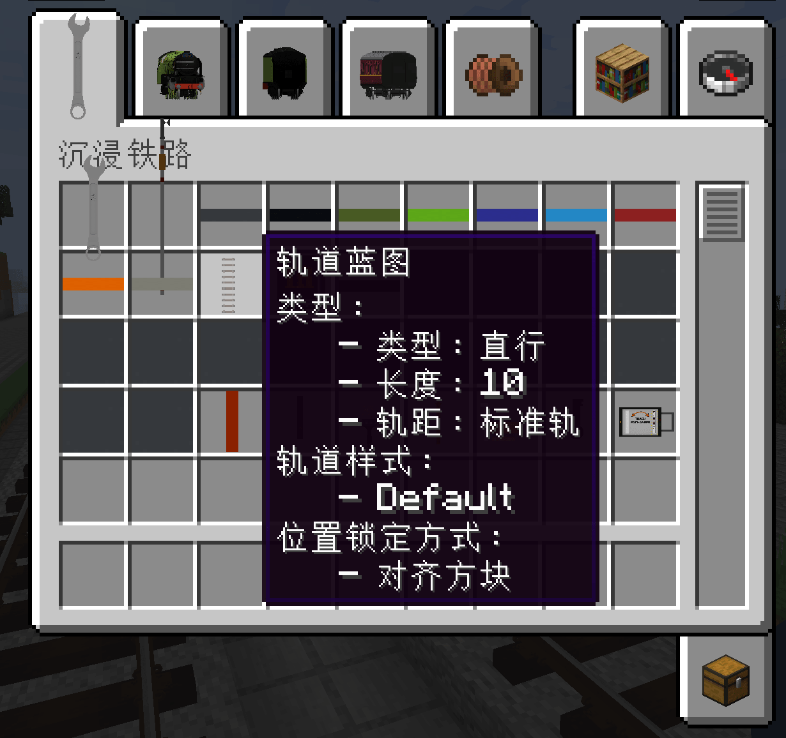
轨道蓝图是你在IR中搭建铁轨的工具，可以从创造模式背包中获取。手持轨道蓝图对准地面后，会自动在地面上展示铁轨的预览图；对地面右键可以放置铁轨，对准铁轨左键则可以打掉铁轨。铁轨不能被放置在空中、上半部分不全的方块（如台阶）上，也不能被放置在冰上（但可以放在蓝冰/浮冰上）。
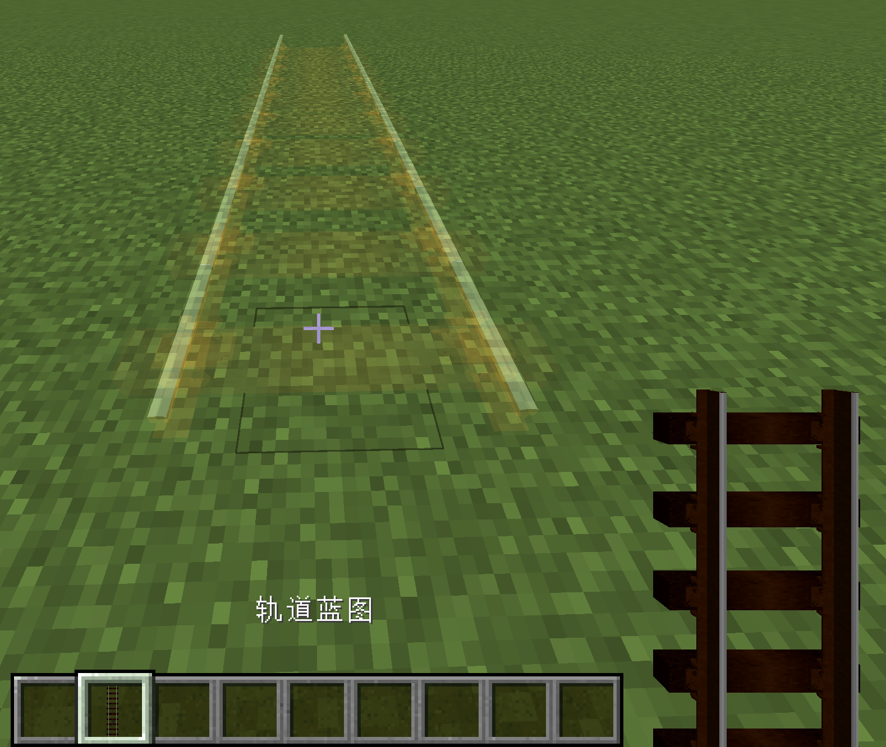
在铺设铁轨时，若铁轨前方有方块阻挡，方块将会被破坏；沙子、沙砾等方块掉落到铁轨上会变成掉落物，但雪能够覆盖在铁轨上。破坏铁轨下的若干方块会破坏铁轨（如果只破坏了一两个，一般没事）。
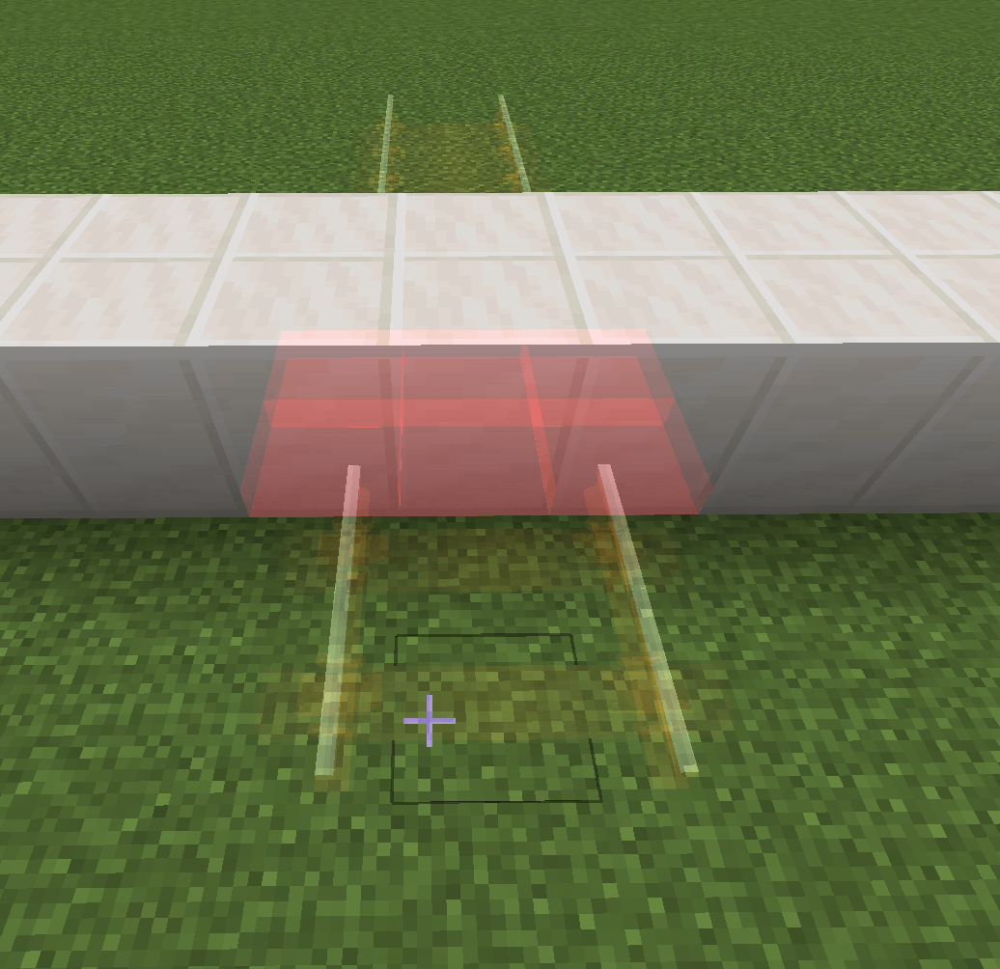
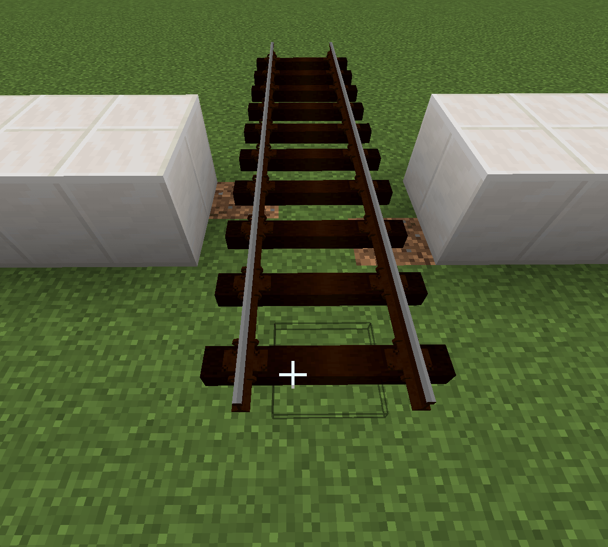
在沉浸铁路中，不修改游戏配置时，你可以向16个不同的方向放置铁轨，如下图所示：
手持轨道蓝图对空气处右键，可以打开设置面板，设置铁轨的各种参数。设置面板中，左侧是铁轨的各种参数，右侧则是轨道的预览图，左边更改的参数将实时在右侧显示，设置完后按 ESC 键即可退出界面。接下来，我们将对设置面板中左侧的参数进行讲解。
左侧参数的第一项是铁轨的长度，单位是方块（即我们常说的"格"），默认长度为 10 个方块。轨道长度可以在 1~1000 个方块中设置，但不建议你单次放置时超过 400 个方块，否则可能有卡顿现象出现。而且万一不小心手残点了下铁轨，几百格的铁路就会瞬间消失……
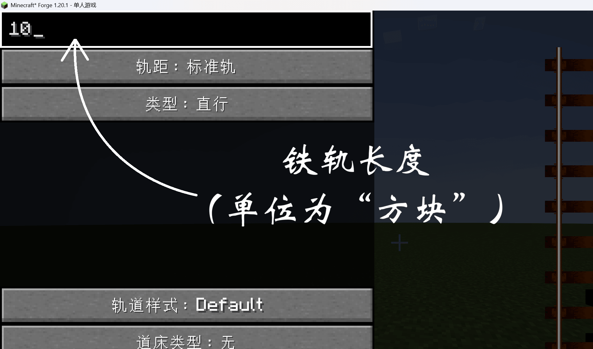
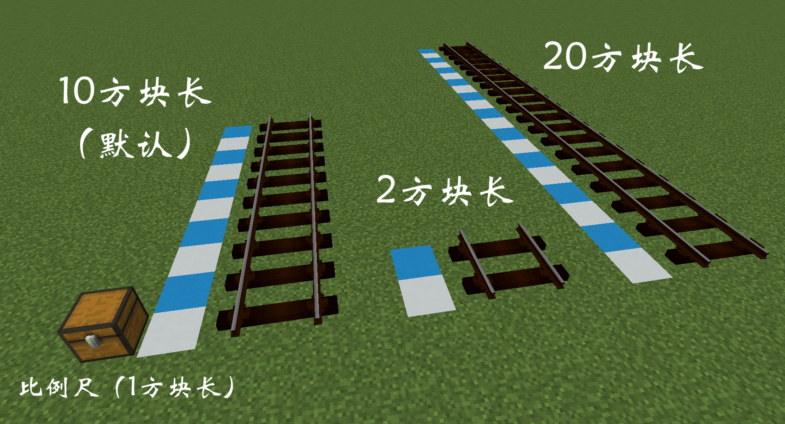
轨距就是铁轨的宽度，从大到小有布鲁内尔轨（宽轨）、标准轨、窄轨、Minecraft轨、模型轨五种轨距。你应当按照车辆的大小选择对应的轨距，否则车辆模型会按轨距缩放，导致车辆过大或过小。大部分车辆都是标准轨的，因此推荐统一使用标准轨。
特别地，Minecraft 轨的大小相当于 MC 的原版矿车铁轨，只有 1 格宽；模型轨距则更小。Minecraft 轨距和模型轨距更偏向于用来展示机车模型而不是搭建真正的铁路。
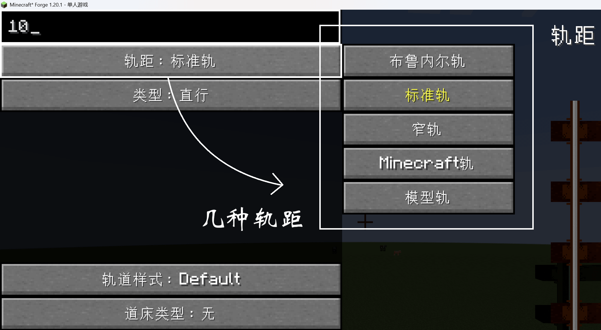
类型选项可以设置铁轨的类型，轨道有直行、坡道、圆弧、道岔、转车台、移车台、自定义曲线七种，我们将在稍后进行专门讲解，这里先不作过多介绍。
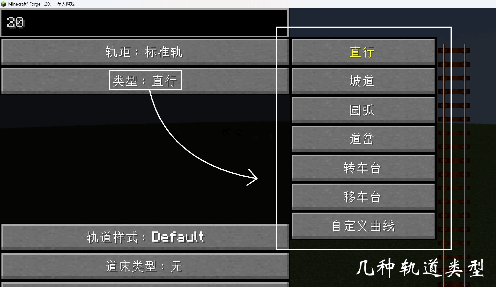
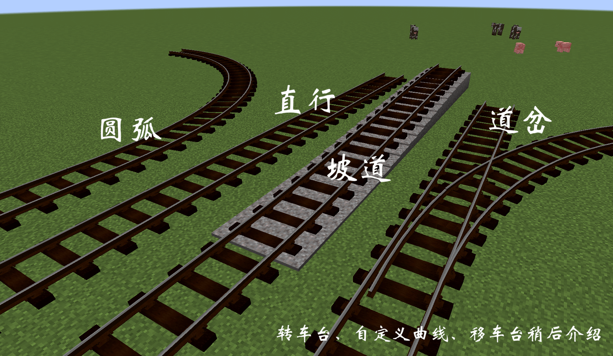
轨道样式选项可以修改铁轨的外观。沉浸铁路默认自带三种轨道样式，分别是 Default（默认）、Concrete Ties（混凝土轨枕）、Rails Only（仅铁轨），如下图所示。除了这些样式外，沉浸铁路可以通过安装追加包获得更多的轨道样式，这些我们放到以后再提。这些轨道样式的名称都是英文，IR好像漏翻译了这里？
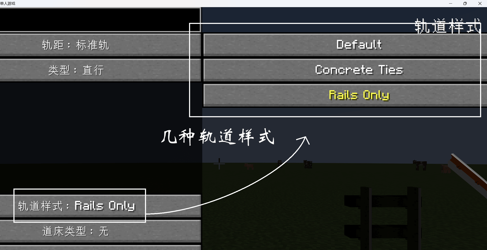
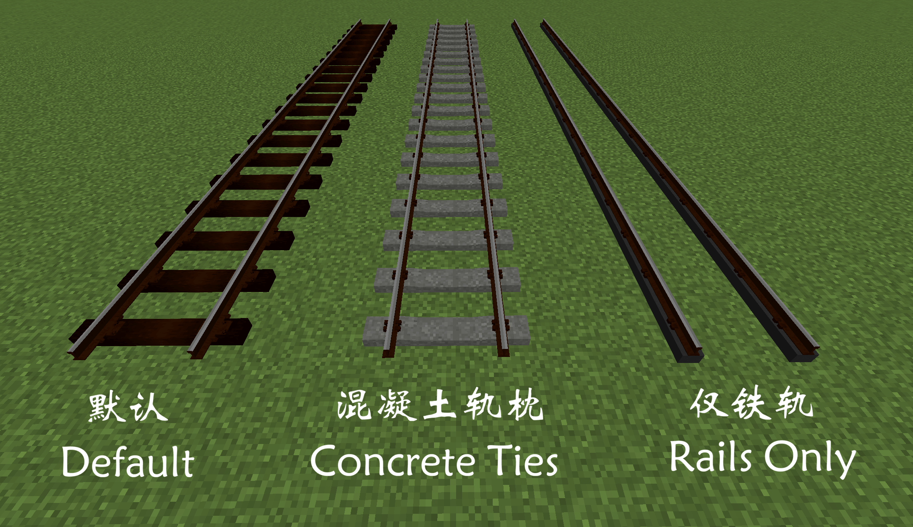
道床是铁轨下方方块与铁轨之间的一层填充物，默认为无。道床有圆石、混凝土、木板等 93 个种类。你可以通过设置道床来美化你的铁路，但性能较弱的电脑不宜过多地使用道床，否则可能会引起卡顿。（在IR 1.10.0中，道床被译为铁轨基座）
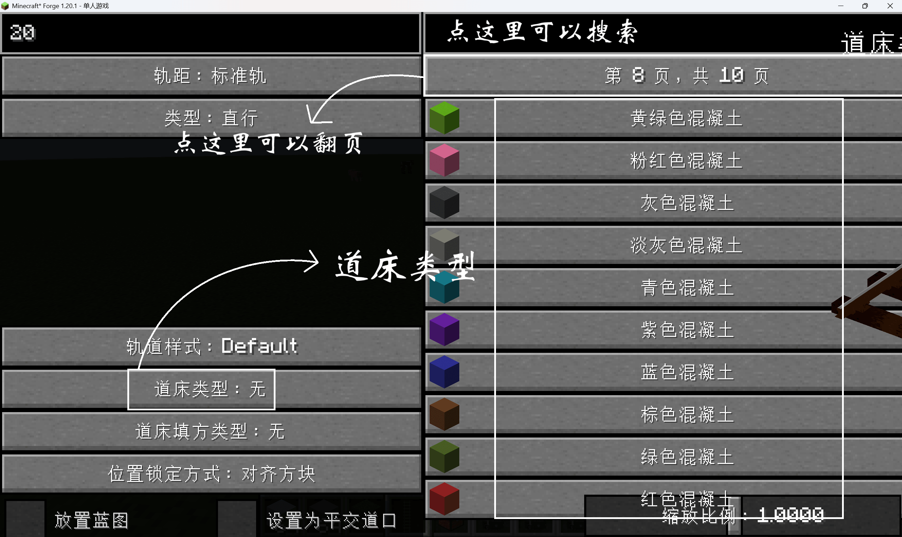
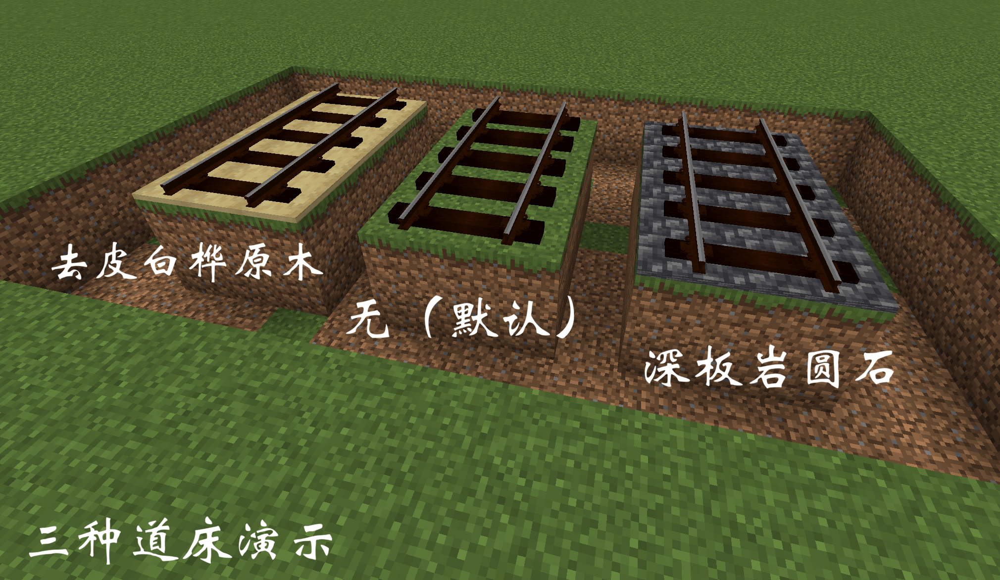
你可以使用道床填方来方便铁路的建设。道床填方是铁轨下方填充的方块，当设置了对应方块为道床填方后，若要放置的铁轨下方没有方块，会自动填充对应的方块并放置铁轨。不过道床填方不会替换其下方的冰、上半部分不全的半砖等妨碍铁轨放置的方块，因此你需要提前手动清除这些障碍，才能正常使用道床填方。下图为设置道床填方为深板岩圆石后放置铁轨的效果。
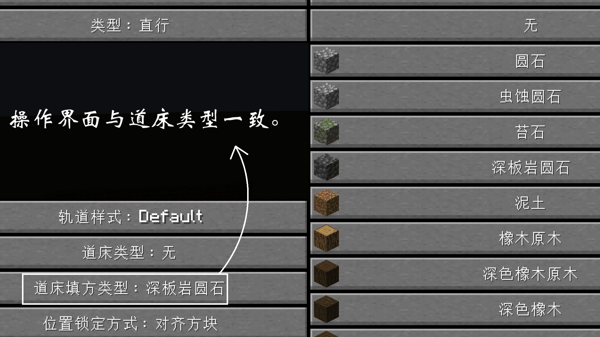
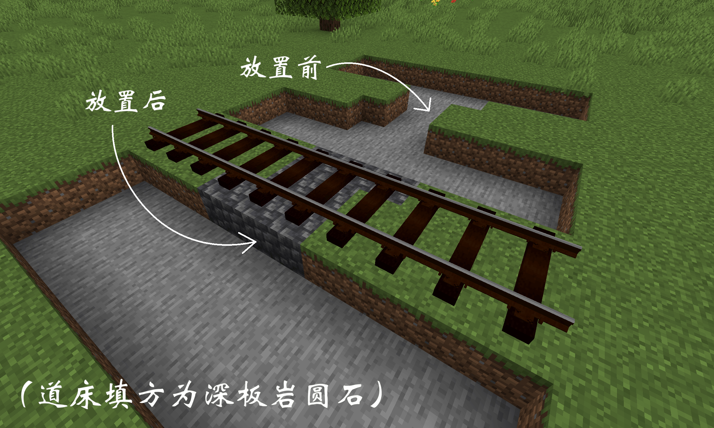
"位置"参数是一个比较高级的选项，它控制的是放置铁轨时铁轨与地面上方块的吸附对齐方式。位置参数的默认值是"对齐方块"，一般来说只要知道对齐方块和对齐像素两种就够用了。这个东西不太好解释，读者自己实践一下就明白了。
| 类型 | 效果 |
|---|---|
| 对齐方块 | 默认样式，放置铁轨时和地面上的方块对齐，最为规整。 |
| 对齐像素/无限制 | 两个都相当于可以随便乱放，区别不大，只是后者更平滑。 |
| 像素锁定/平滑锁定 | 前后移动可以随便乱放，左右移动则遵循"对齐方块"。同样的，这两者区别不大，只是后者更平滑。 |
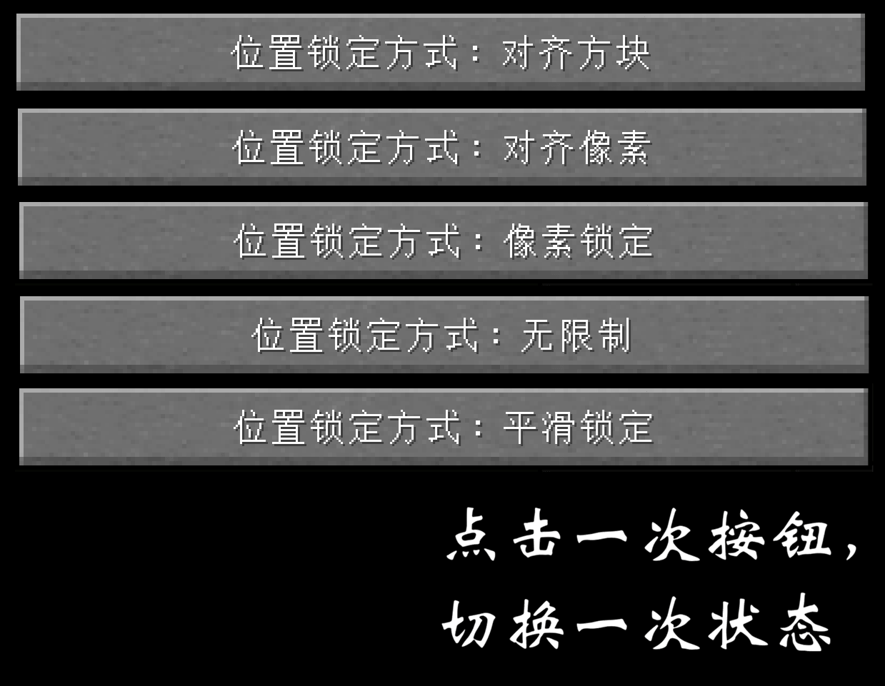
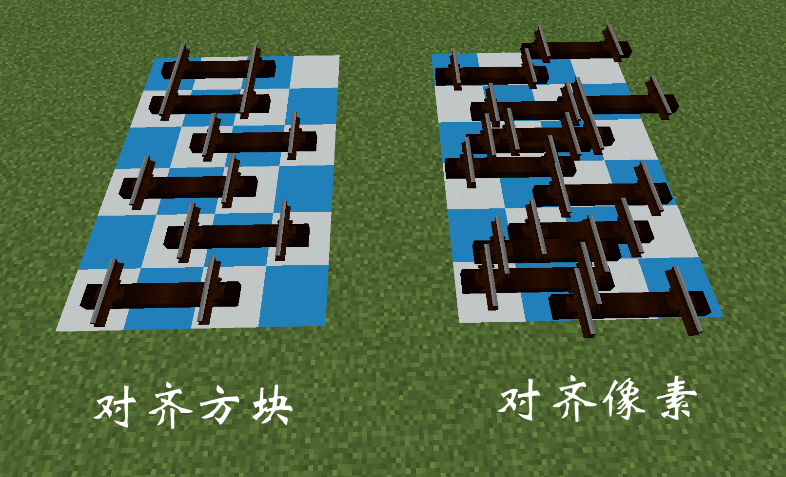
除了按钮外，设置界面下方还有“放置蓝图”和“设置为平交道口”两个选项，可以通过鼠标点击进行勾选。“放置蓝图”放到后面讲比较合适，这里我们先说“设置为平交道口”选项。平交道口是铁路和公路交叉的地方，若设置了道床填方，则勾选“设置为平交道口”选项会将道床填方的填充范围扩宽四格。
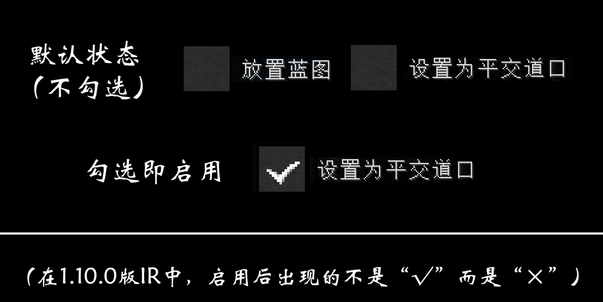
沉浸铁路中有 7 种类型的铁轨，分别是直行、坡道、圆弧、道岔、转车台、移车台和自定义曲线。这 7 种铁轨各有自己的用处和特殊参数，接下来我们将对它们进行分别讲解。
这个就不必讲了，就是笔直的铁路，你之后会经常用到。
坡道就是铁路的斜坡，你可以用它来提升铁轨的高度。不过要注意的是，不管铁轨多长，直接使用放置蓝图放置的一段斜坡最多只能提高 1 格；要连续提高铁轨的高度，可以将多段斜坡叠在一起。注意不要让斜坡太陡，因为斜坡会使机车减速，陡峭的斜坡甚至可能使一些机车（主要是蒸汽机车）中途减速到 0，然后滑落回斜坡的底部。
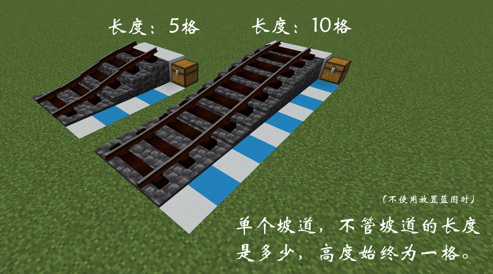
除了铁轨长度等常规参数外，坡道还有一个叫垂直平滑的可选参数，这个参数决定了坡道与平轨道之间是否使用圆弧进行平滑过渡。“垂直平滑”参数一共有 4 个状态，分别是"双向平滑"、"仅近端平滑"、"仅远端平滑"和"无平滑"，默认选中的是“双向平滑”。
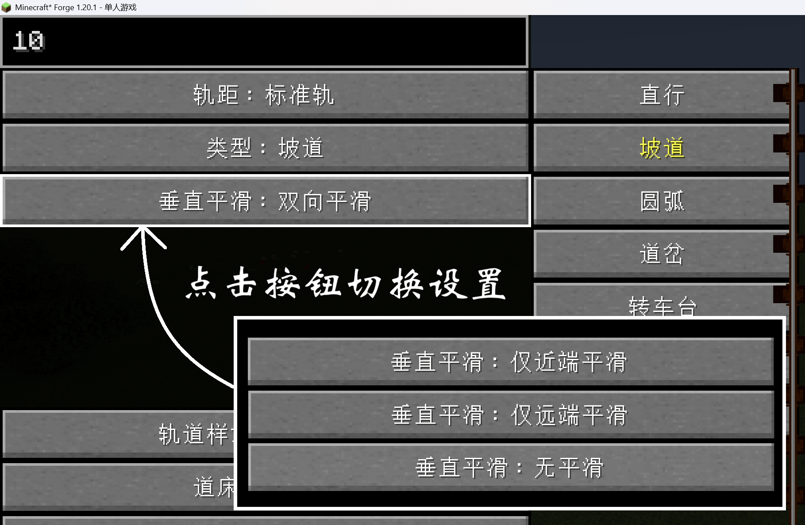
| 类型 | 效果 |
|---|---|
| 双向平滑 | 坡道两端均与平轨道平滑过渡，整体呈 S 形弧线。 |
| 仅近端平滑 | 靠近玩家的一端平滑，远离玩家的一端保持直线。 |
| 仅远端平滑 | 远离玩家的一端平滑，靠近玩家的一端保持直线。 |
| 像素锁定/平滑锁定 | 全程保持直线，与平轨道的连接处没有过渡弧线。 |
选择“双向平滑”时，坡道是有弧度的，可以看到坡道与平轨道连接的两端都有平滑过渡。
选择“无平滑”时，坡道是笔直的，与平轨道之间没有过渡，如下图所示。
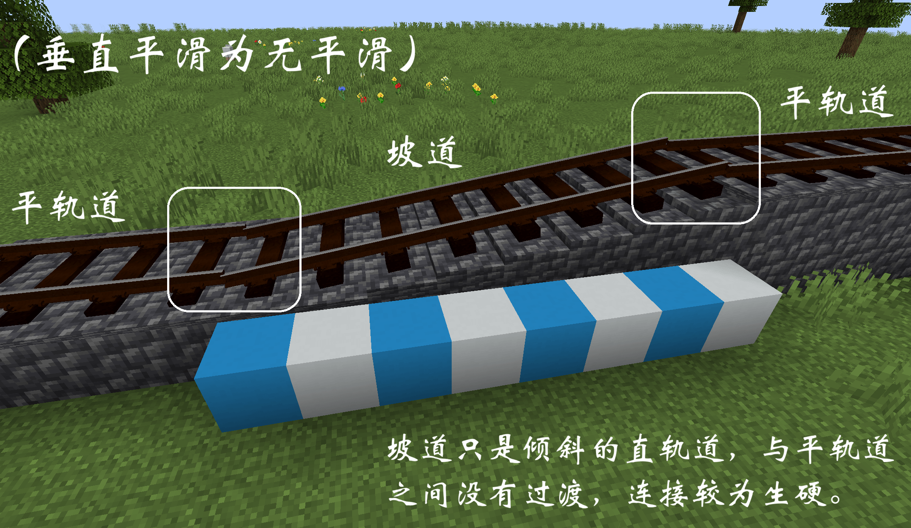
“仅近端平滑”和“仅远端平滑”在“双向平滑”的基础上只保留了一端的平滑，另外一端保持笔直。“仅近端平滑”使坡道靠近玩家的一端保持平滑，远离玩家的一端则无平滑；“仅远端平滑”反之。一般来说，“双向平滑”用的是最多的，但其他三种平滑有时也能派上用场。
圆弧轨道也就是铁路的弯道，是铁路车辆转弯的地方。对于圆弧来说，铁轨长度参数决定的是圆弧的半径；此外，圆弧还有三个参数，分别是垂直平滑、方向和弯道角度。这里的垂直平滑和上面的坡道是一样的，我们就不再赘述了。至于为什么平面的弯道也有垂直平滑选项，这是因为金道钉可以使弯道具有坡度（参见后文“金道钉与铁路自定义”小节）。
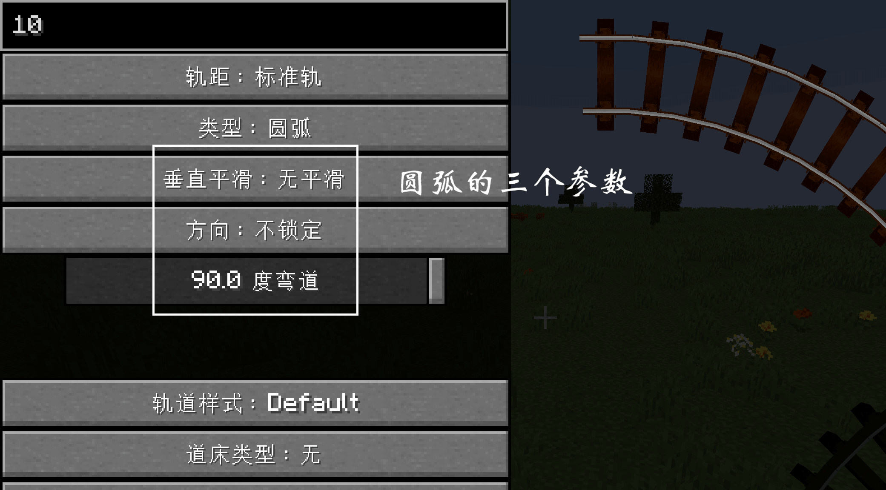
1.方向参数："方向"有无锁定（默认）、左侧锁定和右侧锁定三个选项。当玩家放置弯道时，弯道可以有两个方向，一个是朝向玩家的左手边，一个是朝向玩家的右手边；当方向设置为无锁定时，弯道具体放置在哪个方向主要看玩家的准星朝向哪一边；设置为左侧锁定时，弯道一定朝向左侧；设置为右侧则弯道一定朝向右侧。
2.角度参数：在设置"方向"的按钮下面还有一个滑动条，它被用于设置弯道的角度。弯道的角度默认为 90 度，可选的有 67.5 度、45 度和 22.5 度（貌似在 IR 设置中可以改到更多）。
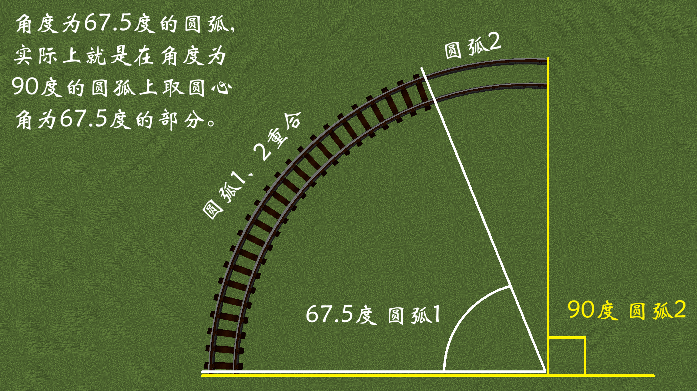
在放置圆弧时，建议你将圆弧轨道建得大些，不建议你放置过小、过短的圆弧，要不然一些车辆可能会在转弯时卡住。
道岔是两条铁路的交汇处，你可以使用道岔将两段铁路连在一起，并将车辆从这一条铁路线转到另外一条铁路线上。道岔可被分为“直向”和“侧向”两个部分，直向是一条直铁轨，而侧向是一段圆弧，它们都可以被单独破坏（破坏了道岔的圆弧部分，道岔就会变成一条直铁路；反之亦然）。这是IR 1.11.0的新增内容！ 道岔的“铁轨长度”参数控制的是侧向圆弧的半径。
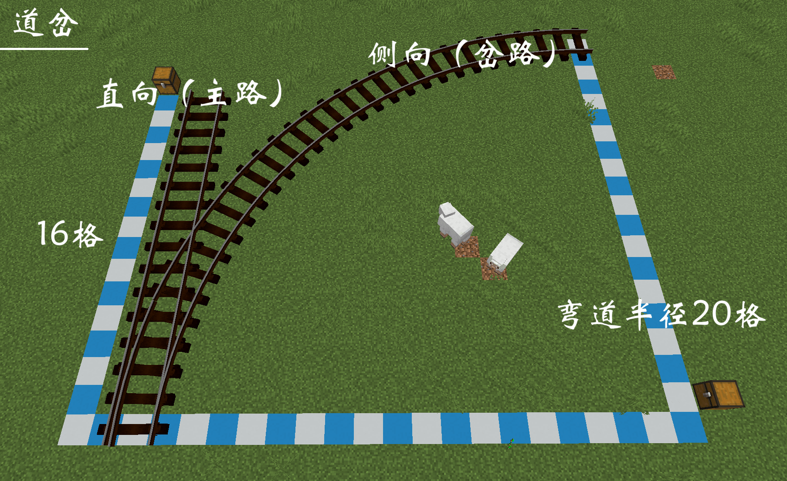
和圆弧一样，道岔也有垂直平滑、方向和角度三个参数，这三个参数负责控制道岔中的圆弧，和上面讲过的圆弧是一样的，我们就不赘述了。道岔还有一个叫做“曲率”的参数，不过实测下来这个参数对道岔的影响可以忽略不计，因此我们放到后面同样具有曲率的铁轨中讲。
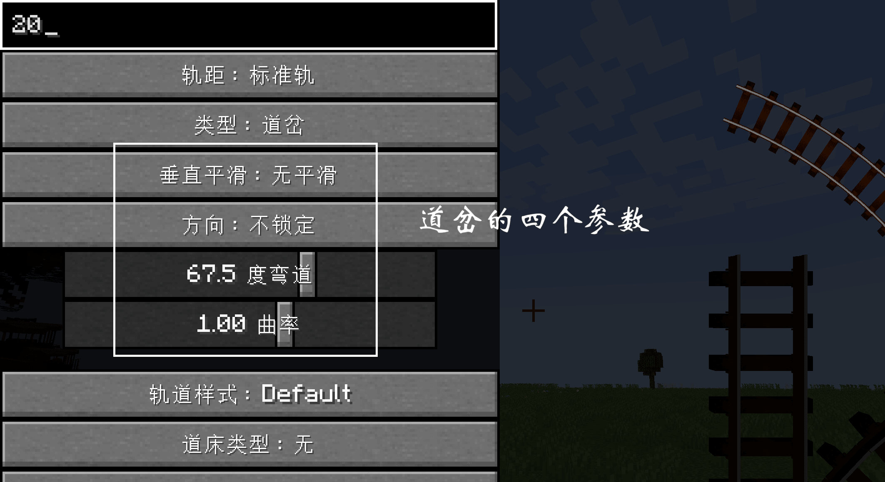
道岔的状态可以使用红石信号控制。道岔默认处于直向状态，机车沿着直线行驶；当收到红石信号时，道岔会切换到侧向状态，机车将驶入岔路。根据进一步研究，红石信号只有直接作用于道岔最前面的几个方块附近才有作用。
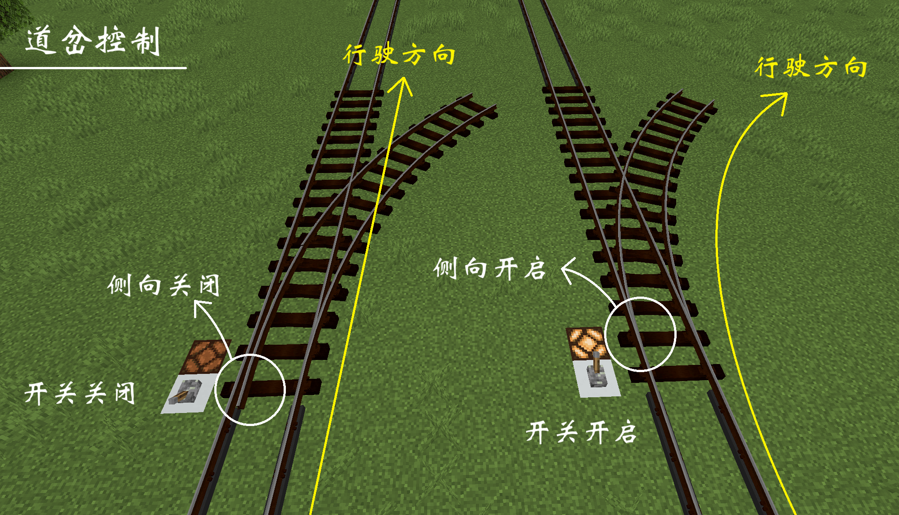
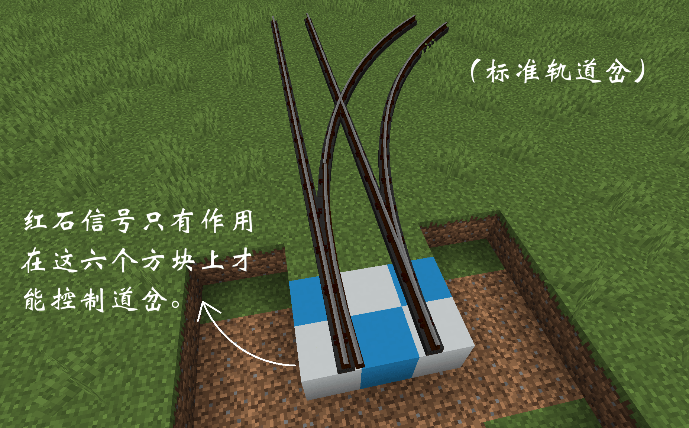
除了使用红石信号控制道岔外，还可以使用沉浸铁路自带的"道岔钥匙"（Switch Key）来控制道岔。手持切换钥匙右键道岔，可以使道岔的状态在"锁定直向"、"锁定侧向"、"不锁定"三个状态之间切换。锁定直向会保持关闭侧向岔路，锁定侧向会保持开启侧向岔路，这两者均不受红石信号控制。不锁定状态则会将开启的侧向岔路关闭，然后恢复红石控制。
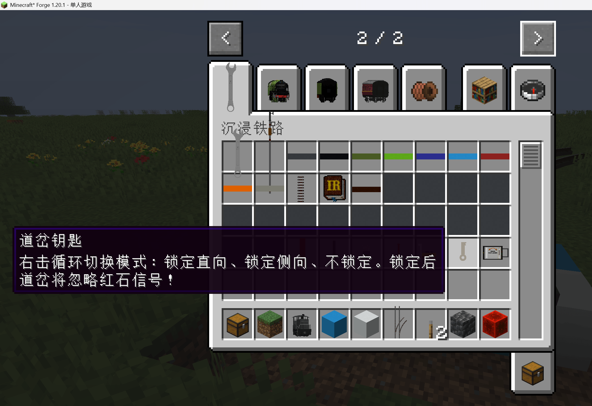
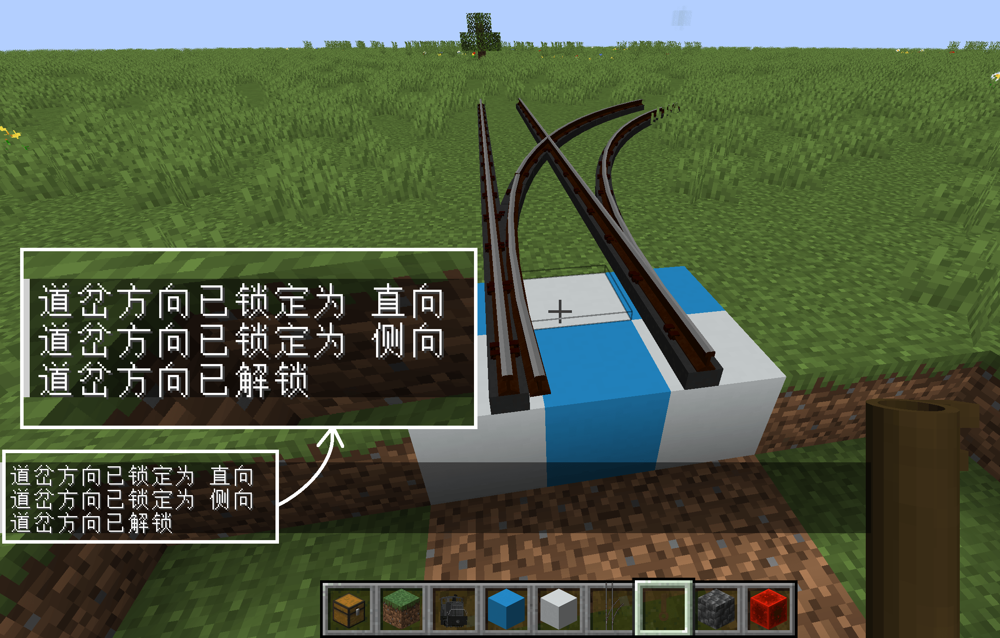
转车台是一种用于旋转车辆的大型装置，你可以使用它将机车旋转到 16 个不同的方向上，实现火车掉头等功能。转车台的半径由“铁轨长度”参数决定。
值得指出的是：相比于普通的铁轨，转车台具有一格高度，因此非常建议你给转车台设置道床方块（下图中转车台的道床是深板岩圆石），否则转车台看起来会像是浮在空中的铁轨。
将车辆开到转车台上的铁轨（转车轨）上后，使用大型扳手右键单击转车台的某一位置，可以把载有车辆的铁轨旋转到离该位置最近的铁轨上。
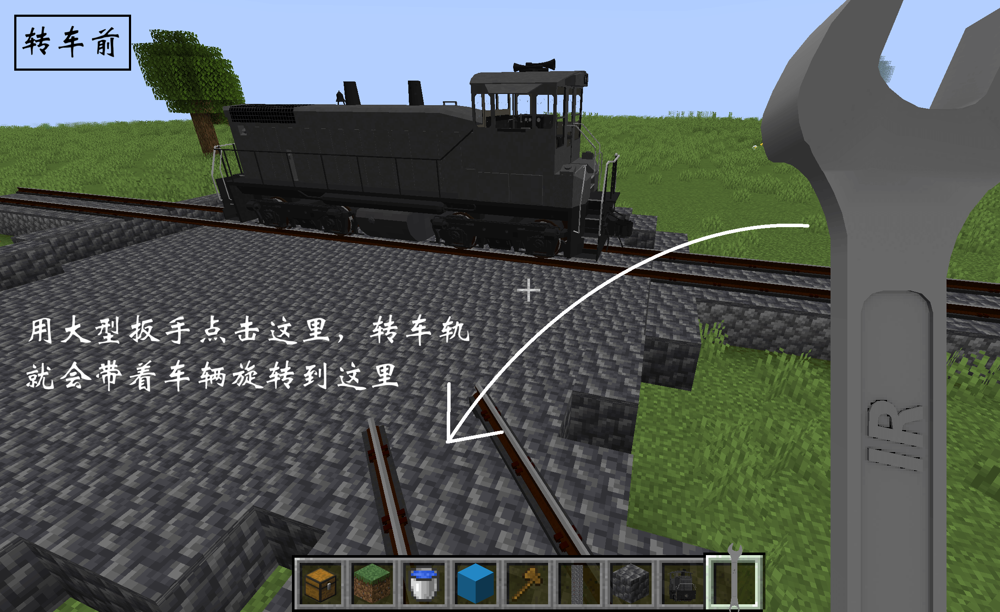
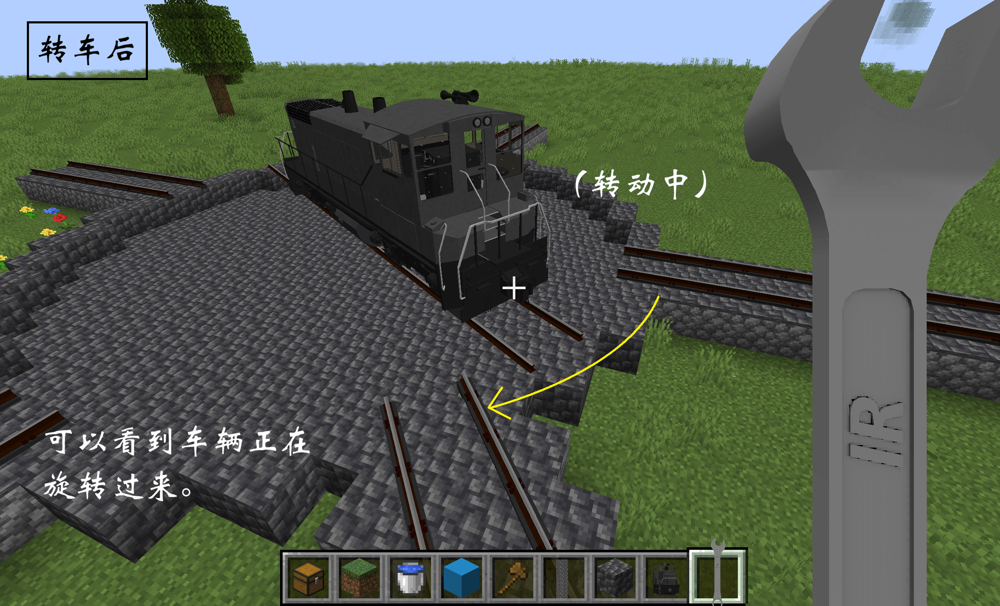
移车台是 IR 1.11.0 新增的一种装置，你可以用它将铁路车辆从一条铁轨平移到另外一条铁轨上。与转车台相同，移车台也具有1格高度，非常建议你为它设置道床方块。移车台的使用方式与转车台一致，也是通过大型扳手右键单击对应的轨道，将车辆平移过去。
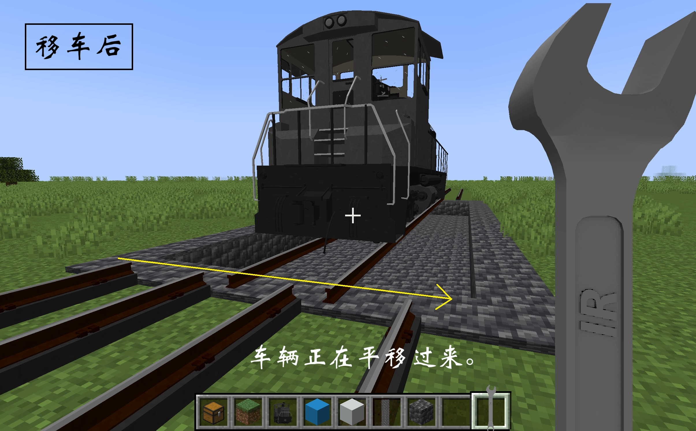
除了“铁轨长度”参数控制移车台的长度外，移车台还有其他几个参数，分别是移车台轨道数和移车台轨道间距（单位是方块）。这两个参数分别决定了移车台上轨道的数量和间距，如下图所示。
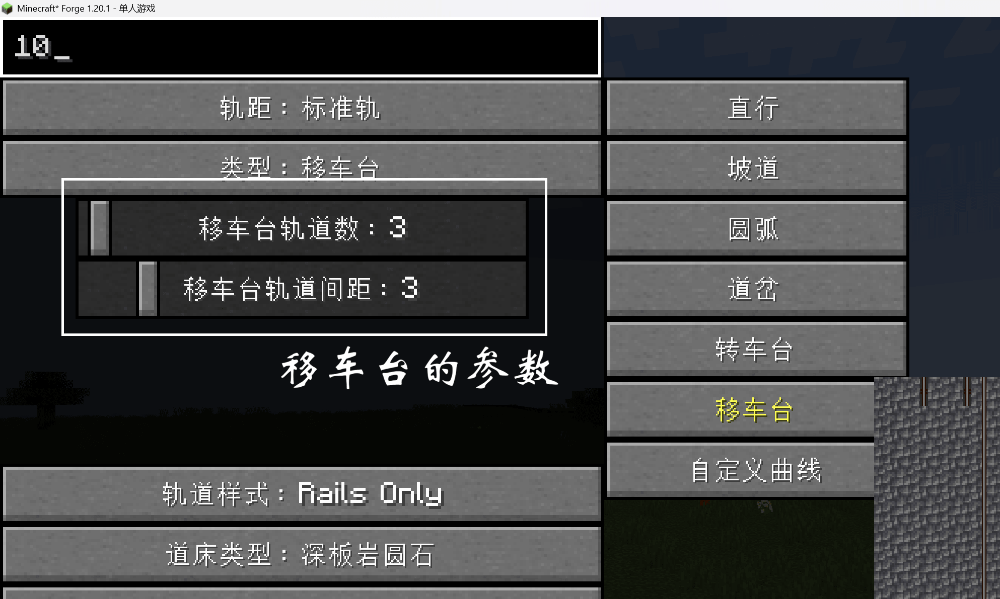
这一点我们放在下面一节"金道钉与铁路自定义"来讲。
上面所说的铺设铁路的方法，都需要先在轨道蓝图中设置好铁轨的参数，然后再将铁轨放置到地面上。但是，在实际建设铁路时，我们往往不能得知什么参数才是最合适的，如果还得先测量最佳的长度、角度等才能建设铁路，未免也太麻烦了（虽然挺真实的）；而且有时我们要建的铁路是不规则的，用设置面板中提供的规则的弯道、斜坡等组合起来非常复杂，外观也未必好看。
为了应对这样的情况，沉浸铁路还提供了一个叫做"金道钉"的工具，你可以使用它直接根据实际情况调整铁轨。要使用金道钉功能，你需要在轨道蓝图中勾选"放置蓝图"选项，然后再手持轨道蓝图对准铁轨的铺设起点右键，这样会在地面上放置一个金道钉和一段处在预览状态的铁路。手持金道钉右键地面上的金道钉，如果听到金属敲击的清脆声音，你手上的金道钉就成功绑定了地面上的铁路，可以进行下一步操作了。
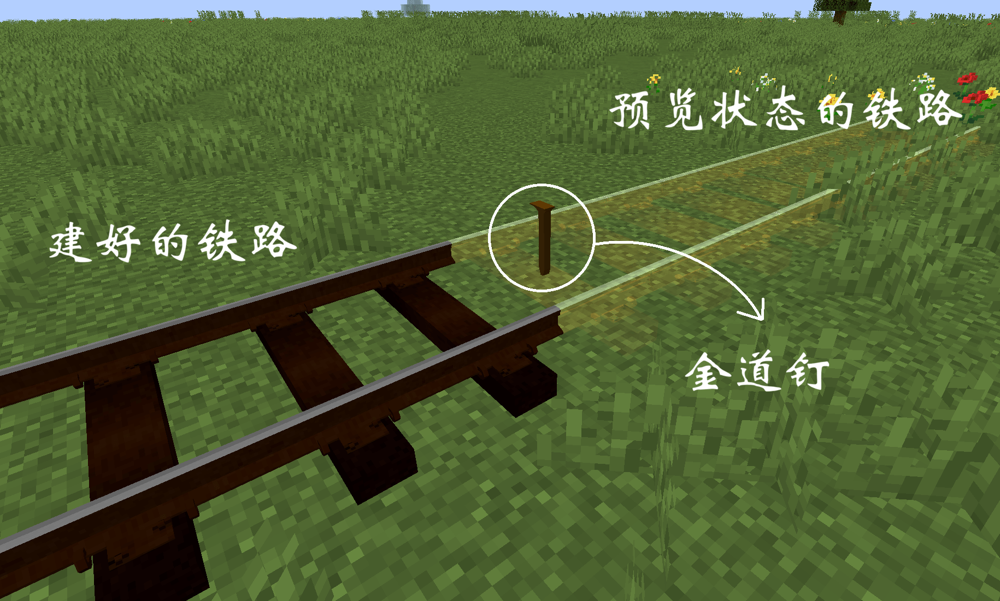
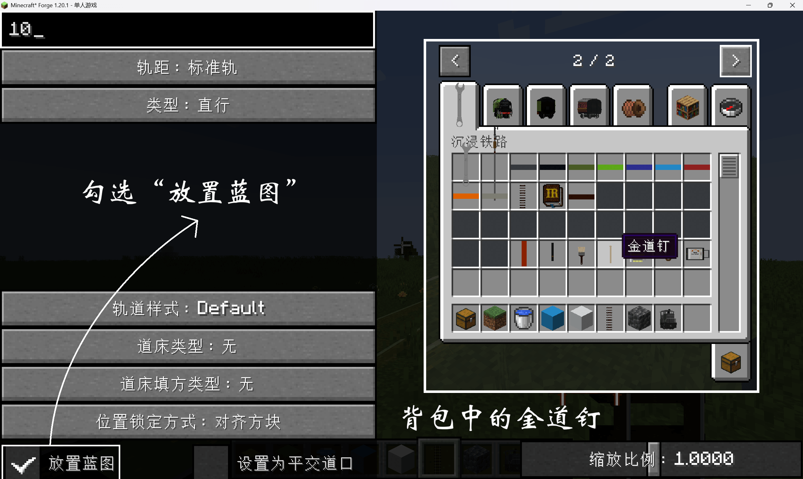
手持绑定后的金道钉，对着铁轨要延伸到的地方右键，金道钉就会自动调整铁轨的长度，使铁轨尽力达到对应的位置。要注意的是，如果你放置铁轨时把铁轨类型设置成了"直行"、"弯道"或"斜坡"，铁轨的固有方向（或弧度）是不会改变的，不会改变铁轨原先的方向（弧度）而拐到你右键的那个方块上，如下图所示。
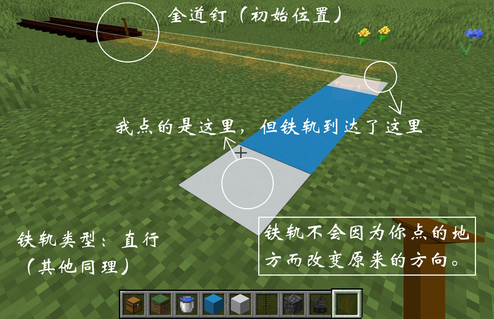
除了改变铁轨的长度外，金道钉还可以使弯道、道岔具有坡度，并且可以使坡道的高度超过 1 格，如下图所示。手持金道钉，对空气处右键，还可以再次打开对应铁轨的设置面板（和轨道蓝图的设置面板是一样的），可以再次根据实际情况调整铁轨的类型、样式、长度等参数。要绑定其他预览铁路，直接使用金道钉右键该预览铁路的金道钉即可，会自动解除对上一预览铁路的绑定。
当你设计好你的铁路后，可以按住 SHIFT 键并左键破坏掉预览铁路初始位置的金道钉，使设置好的铁路被放置下来。这样，一条新的铁路线就建好了。
然而，金道钉虽然能够比较灵活地根据实际情况调整直行、弯道、斜坡等类型的铁路，但是这些调整都比较有限，无法突破坡道、圆弧、直行轨道本身的限制。如果要建设比较复杂的、不规则的线路，使用规则的圆弧、坡道等去组合显然是非常麻烦的。这时，我们就可以使用一种不规则的铁轨来设计线路——自定义曲线。“自定义曲线”是IR设计铁路线的王牌工具，需要在勾选“放置蓝图”的情况下结合金道钉使用。
自定义曲线没有如圆弧、坡道等铁轨类型的形状限制，可以灵活变化，直接将铁路延伸到金道钉所点击的方块上。只要确定了铁路的起点和终点，剩下的坡道、直行、圆弧等铁路段就会自动生成。因此，自定义曲线甚至可以取代直行、圆弧、坡道等铁轨类型（前提是运用得好），如下图所示。读者不妨自行探索一下自定义曲线的运用，以及如何微调自定义曲线。
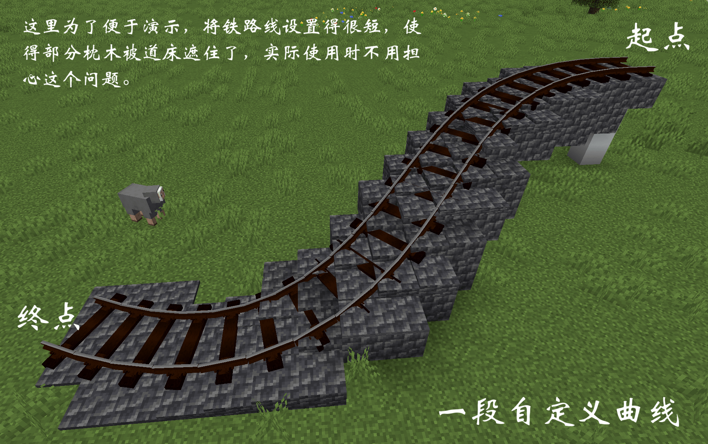
自定义曲线的曲率 在自定义轨道的轨道蓝图中，存在一个叫做“曲率”的滑动条，它决定了自定义曲线的弯曲程度。曲率的范围是0.25 ~ 1.50，曲率越小弯曲程度越小，效果如下图所示。曲率的默认值是 1.00，一般情况下不用修改曲率，但你可以通过修改曲率来精细地修建你的铁路。
如果你想修改已经建好的铁轨的样式，又不想把铁轨拆掉重建，可以使用沉浸铁路提供的"轨道样式更换器"工具，直接修改地面上的铁路的样式。
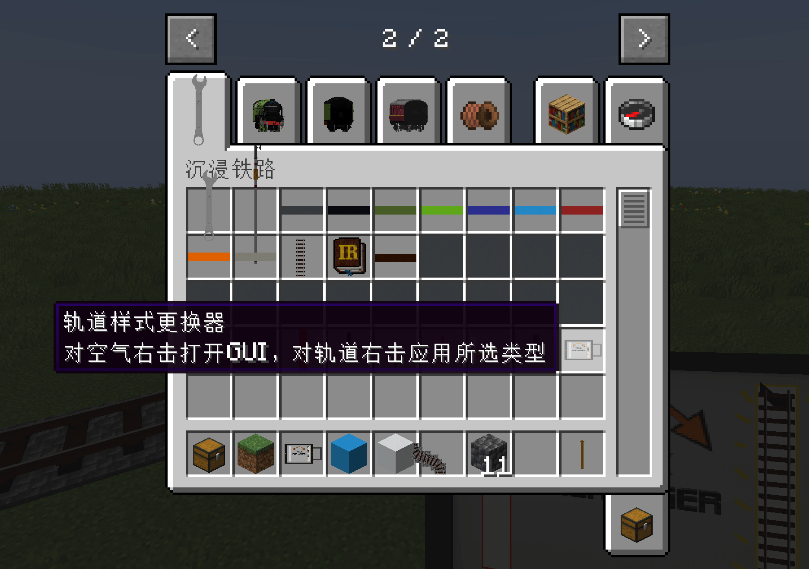
手持轨道样式更换器，对准空气处右键，可以打开轨道样式更换器的设置面板，设置"轨道样式"、"道床类型"和"轨距"三项参数。修改好后，你可以手持轨道样式更换器右键地面上的铁轨，即可将该段铁路修改为对应样式。这个轨道样式更换器沿用的还是IR的一个很老的版本的界面，可能是作者忘记改了
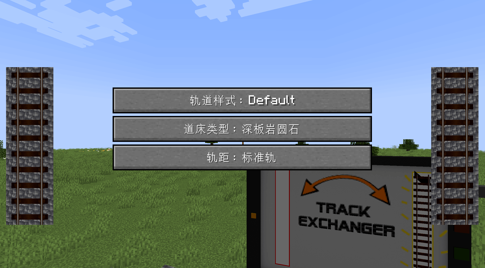
这就是本节教程的全部内容，掌握了这一节，你就能够为铁路车辆铺设一些最基本的线路了。在下一节中，我们将讨论如何驾驶铁路机车。
这篇教程最早写于 2024 年，当时发在了 MC 百科和 B 站上，用的是 Minecraft 1.12.2 和 IR 1.10.0。如今 IR 已更新到 1.11.0 正式版，不但对高版本 MC 的支持更加稳定，中文翻译也完善了许多，同时还调整了一些具体机制，因而老教程的部分内容已经跟不上了。所以，笔者趁着这次机会重新修订了一番，补充了一些新内容，整理成了这篇新版教程，希望能对大家更有帮助。
本篇教程使用 CC BY-NC-SA 协议，本文中的所有图片、文字和列表均为作者一人独创。
本教程所用的 MC 版本、Forge 版本和相关 Mod 如下：
| 组件 | 版本 / 文件名 |
|---|---|
| Minecraft 版本 | 1.20.1 |
| Forge 版本 | 47.4.20 |
| 沉浸铁路 | ImmersiveRailroading-1.20.1-forge-1.11.0.jar |
| Track API | TrackAPI-1.20.1-forge-1.3.jar |
| Universal Mod Core | UniversalModCore-1.20.1-forge-1.3.0.jar |
※ Track API 和 Universal Mod Core 两个 Mod 是沉浸铁路的前置 Mod，不安装这两项则无法运行沉浸铁路。